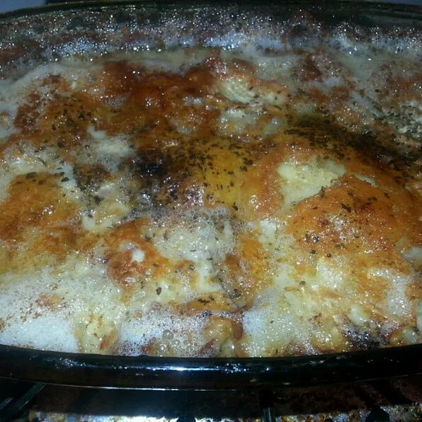

Tartiflette

Description
Potato casserole that is a favorite in France. It's a specialty from the Savoie (Alps) region.
Perfect for a cold day--especially after a day on the slopes.
I use Brie when making it in the U.S. Reblochon cheese is the authentic cheese for the dish, but
it's impossible to find in the USA. Raclette cheese mixed with Gruyere is also a good substitute.
Ingredients
- 2 ½ pounds red potatoes, peeled and cut into 1/4-inch slices
- 1 tablespoon butter
- 1 yellow onion, diced
- ½ pound bacon, cut crosswise into 1/4-inch pieces
- 1 (8 ounce) container creme fraiche
- salt and ground black pepper to taste
- 1 (8 ounce) round Brie cheese, sliced
Steps
- Preheat an oven to 350 degrees F (175 degrees C). Grease a 9x13-inch baking pan.
-
Place the potatoes into a large pot and cover with salted water. Bring to a boil over
high heat, then reduce heat to medium-low, cover, and simmer until tender, 10 to 12
minutes. Drain and allow to steam dry for a minute or two, then place in a large bowl.
-
Heat the butter in a skillet over medium heat. Stir in the onion; cook and stir until
the onion has softened and turned translucent, about 5 minutes. Stir in the bacon, and
continue cooking and stirring until the bacon is browned and beginning to crisp, 2 to 3
more minutes. Mix onion mixture into the potatoes. Stir in the creme fraiche and season
with salt and pepper. Spread potato mixture into the prepared baking dish, and arrange
the sliced Brie cheese on top. Cover with aluminum foil.
-
Bake in the preheated oven for 30 minutes, then remove the aluminum foil. Return the pan
to the oven, and continue baking until bubbly, 10 to 15 more minutes.